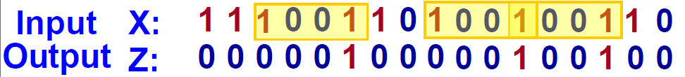
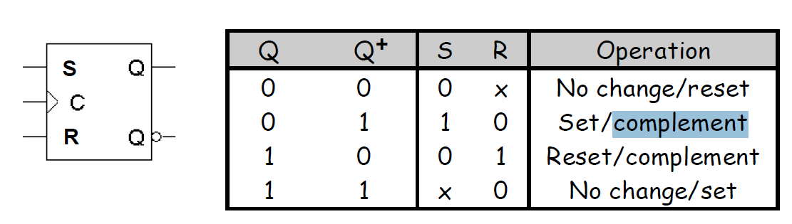

טבלאות עירור (Excitation Tables)
טבלאות עירור מתארות את ערכי הכניסה הנדרשים ל-flip-flop כדי שיעבור ממצב נוכחי למצב הבא. לכל סוג flip-flop (SR, JK, D, T) יש טבלת עירור משלה.
הטבלה מגדירה: בהינתן המצב הנוכחי (Q) והמצב הרצוי הבא (Q+), מה צריכות להיות כניסות ה-flip-flop.
דוגמה – טבלת עירור ל-JK Flip-Flop:
| Q | Q+ | J | K |
|---|---|---|---|
| 0 | 0 | 0 | X |
| 0 | 1 | 1 | X |
| 1 | 0 | X | 1 |
| 1 | 1 | X | 0 |
דוגמה: אם Q=0 ורוצים Q+=1, צריך J=1 ו-K יכול להיות 0 או 1 (X = don't care).
עיצוב מעגלים סדרתיים (Sequential Circuit Design)
מעגל סדרתי הוא מעגל שבו הפלט תלוי לא רק בכניסות הנוכחיות אלא גם בהיסטוריה של הכניסות. העיצוב כולל:
- הגדרת מצבים (states) והמעברים ביניהם
- שימוש ב-flip-flops לאחסון המצב
- לוגיקה קומבינטורית לחישוב המצב הבא והפלט
דוגמה – מונה בינארי (Binary Counter):
מונה 2 ביטים: מצבים 00→01→10→11→00. כל פעימת שעון עובר למצב הבא. משתמשים ב-2 flip-flops. הלוגיקה: Q1+ = Q1⊕Q0, Q0+ = Q0' (או T flip-flop עם T=1).
דוגמה: עיצוב מזהה רצף (Sequence Recognizer Design)
מזהה רצף הוא מעגל שמזהה דפוס מסוים בסדרת קלט ומפיק פלט בהתאם. להלן דוגמה מלאה עם ערכים בינאריים – מזהה רצף "11":
דוגמה מלאה בערכים בינאריים – מזהה "11"
מטרה: פלט Z=1 כאשר הקלט X מכיל שני 1-ים רצופים.
שלב 1 – טבלת מצבים עם קודים בינאריים:
| מצב | Q1 Q0 | X=0: מצב/פלט | X=1: מצב/פלט |
|---|---|---|---|
| S0 (התחלה) | 0 0 | S0 / Z=0 → 00/0 | S1 / Z=0 → 01/0 |
| S1 (קיבלנו 1) | 0 1 | S0 / Z=0 → 00/0 | S2 / Z=0 → 10/0 |
| S2 (קיבלנו 11) | 1 0 | S0 / Z=0 → 00/0 | S2 / Z=1 → 10/1 |
שלב 2 – טבלת מעברים בינארית (Q1, Q0, X → Q1+, Q0+, Z):
| Q1 | Q0 | X | Q1+ | Q0+ | D1 | D0 | Z |
|---|---|---|---|---|---|---|---|
| 0 | 0 | 0 | 0 | 0 | 0 | 0 | 0 |
| 0 | 0 | 1 | 0 | 1 | 0 | 1 | 0 |
| 0 | 1 | 0 | 0 | 0 | 0 | 0 | 0 |
| 0 | 1 | 1 | 1 | 0 | 1 | 0 | 0 |
| 1 | 0 | 0 | 0 | 0 | 0 | 0 | 0 |
| 1 | 0 | 1 | 1 | 0 | 1 | 0 | 1 |
שלב 3 – משוואות: D1 = X·Q0, D0 = X, Z = Q1·Q0'·X
שלב 4 – סימולציה עם קלט X = 1,1,1 (בינארי: 111):
| פעימה | X | Q1 Q0 (לפני) | D1 D0 | Q1 Q0 (אחרי) | Z |
|---|---|---|---|---|---|
| 0 | – | 0 0 | – | 0 0 | 0 |
| 1 | 1 | 0 0 | 0 1 | 0 1 | 0 |
| 2 | 1 | 0 1 | 1 0 | 1 0 | 0 |
| 3 | 1 | 1 0 | 1 0 | 1 0 | 1 |
הסבר: פעימה 1: 00+1→01 (S0→S1, קיבלנו 1 ראשון). פעימה 2: 01+1→10 (S1→S2, קיבלנו 11). פעימה 3: 10+1→10, Z=Q1·Q0'·X=1·1·1=1 – הרצף "11" זוהה.
דוגמה נוספת – X = 0,1,1,1:
| פעימה | X | Q1 Q0 | Z |
|---|---|---|---|
| 0 | – | 0 0 | 0 |
| 1 | 0 | 0 0 | 0 |
| 2 | 1 | 0 1 | 0 |
| 3 | 1 | 1 0 | 0 |
| 4 | 1 | 1 0 | 1 |
פעימה 4: מצב 10, X=1 → Z=1. הרצף הבינארי 0111 מכיל "11".
דוגמה – מזהה רצף "1001" בקלט "1100101011001"
מטרה: זיהוי הדפוס "1001" בתוך הסדרה 1100101011001. הפלט Z=1 בפעימת השעון שבה מתקבל הביט האחרון (1) של הדפוס.
מצבים: S0 (התחלה), S1 (קיבלנו "1"), S2 (קיבלנו "10"), S3 (קיבלנו "100"), S4 (קיבלנו "1001").
| מצב | X=0 | X=1 |
|---|---|---|
| S0 | S0/Z=0 | S1/Z=0 |
| S1 | S2/Z=0 | S1/Z=0 |
| S2 | S3/Z=0 | S1/Z=0 |
| S3 | S0/Z=0 | S4/Z=1 |
| S4 | S0/Z=0 | S1/Z=0 |
סימולציה – קלט: 1 1 0 0 1 0 1 0 1 1 0 0 1
| פעימה | X | מצב לפני | מצב אחרי | Z | הסבר |
|---|---|---|---|---|---|
| 0 | – | S0 | S0 | 0 | אתחול |
| 1 | 1 | S0 | S1 | 0 | קיבלנו "1" |
| 2 | 1 | S1 | S1 | 0 | שמירה על "1" |
| 3 | 0 | S1 | S2 | 0 | קיבלנו "10" |
| 4 | 0 | S2 | S3 | 0 | קיבלנו "100" |
| 5 | 1 | S3 | S4 | 1 | זיהוי "1001" (פעם ראשונה) |
| 6 | 0 | S4 | S0 | 0 | איפוס |
| 7 | 1 | S0 | S1 | 0 | קיבלנו "1" |
| 8 | 0 | S1 | S2 | 0 | קיבלנו "10" |
| 9 | 1 | S2 | S1 | 0 | "101" – חוזרים ל-S1 |
| 10 | 1 | S1 | S1 | 0 | קיבלנו "1" |
| 11 | 0 | S1 | S2 | 0 | קיבלנו "10" |
| 12 | 0 | S2 | S3 | 0 | קיבלנו "100" |
| 13 | 1 | S3 | S4 | 1 | זיהוי "1001" (פעם שנייה) |
דיאגרמת תזמון – אות השעון והאותות:
Clock: _|_|_|_|_|_|_|_|_|_|_|_|_|_
1 2 3 4 5 6 7 8 9 10 11 12 13
X: 1 1 0 0 1 0 1 0 1 1 0 0 1
+-1001-+ +-1001-+
Z=1 Z=1
Z: ___________|___________|___
5 13
הסבר: Z=1 בפעימות 5 ו-13 – בשתי הפעמים זוהה הדפוס "1001" (ביטים 2–5 וביטים 10–13).
שלב 1: בניית טבלת מצבים (Making a State Table)
מגדירים את כל המצבים האפשריים ואת המעברים ביניהם. לכל מצב ולכל ערך קלט, מגדירים את המצב הבא ואת ערך הפלט.
דוגמה – מזהה רצף "11":
מצבים: S0 (התחלה), S1 (קיבלנו 1 אחד), S2 (קיבלנו 11).
| מצב נוכחי | X=0 | X=1 |
|---|---|---|
| S0 | S0 / Z=0 | S1 / Z=0 |
| S1 | S0 / Z=0 | S2 / Z=0 |
| S2 | S0 / Z=0 | S2 / Z=1 |
שלב 2: הקצאת קודים בינאריים למצבים (Assigning Binary Codes to States)
מקצים לכל מצב קוד בינארי ייחודי. מספר הביטים נקבע לפי מספר המצבים (n מצבים דורשים ⌈log₂(n)⌉ flip-flops).
דוגמה – 3 מצבים דורשים 2 flip-flops (Q1Q0):
S0→00, S1→01, S2→10
שלב 3: מציאת ערכי כניסות ל-flip-flops (Finding Flip-Flop Input Values)
באמצעות טבלאות העירור, עבור כל מעבר מצב מחשבים את ערכי הכניסות הנדרשים לכל flip-flop.
דוגמה – D flip-flops (D = Q+):
מעבר S0(00)→S1(01) עם X=1: Q1+Q0+=01, לכן D1=0, D0=1.
שלב 4: מציאת משוואות לכניסות ה-FF ולפלט (Find Equations for the FF Inputs and Output)
מפשטים את הביטויים הלוגיים (למשל באמצעות מפת Karnaugh) ומקבלים משוואות בוליאניות לכניסות ה-flip-flops ולפלט.
דוגמה – מזהה "11":
D1 = X·Q0, D0 = X, Z = Q1·Q0'·X (Mealy)
שלב 5: בניית המעגל (Build the Circuit)
מממשים את המשוואות באמצעות שערים לוגיים ו-flip-flops ומרכיבים את המעגל הפיזי.
דוגמה:
2 D flip-flops, שער AND ל-D1 (X·Q0), חיבור ישיר X ל-D0, שער AND ל-Z (Q1·Q0'·X).
דיאגרמת תזמון (Timing Diagram)
דיאגרמת תזמון מציגה את שינויי האותות לאורך זמן. מציגים בה:
- אות השעון (Clock)
- אות הקלט
- מצבי ה-flip-flops (Q)
- אות הפלט
הדיאגרמה מאפשרת לוודא שהמעגל מתנהג כמצופה ולזהות בעיות תזמון.
דוגמה – מזהה "11" עם קלט X=0,1,1,0:
Clock: __|‾|_|‾|_|‾|_ | X: ___|‾‾‾|___ | Q1Q0: 00→01→10→00 | Z: _____|‾|_____
בפעימת השעון השלישית (אחרי שני 1-ים) Z=1.
תצוגת פלט – s1.png

שים את קובץ s1.png בתיקיית img.
הסבר הפלט:
התמונה מציגה את פלט הסימולציה של מעגל סדרתי (מזהה רצף או מונה). בדרך כלל מוצגים:
- Clock (שעון): פעימות השעון שמסנכרנות את ה-flip-flops.
- X (קלט): סדרת הביטים שנכנסת למעגל.
- Q1, Q0: מצבי ה-flip-flops – מייצגים את המצב הפנימי (למשל 00=S0, 01=S1, 10=S2).
- Z (פלט): Z=1 כאשר הרצף "11" מזוהה – כלומר כשהמצב הוא S2 (10) והקלט X=1.
הפלט משתנה בקצב השעון: Q1 ו-Q0 מתעדכנים בפעימת שעון, ו-Z תלוי ב-Q1, Q0 ו-X (מכונת Mealy).
בניית אותו מעגל עם D Flip-Flops
D flip-flop הוא הפשוט ביותר: הכניסה D קובעת ישירות את המצב הבא (Q+ = D). לכן:
- אין צורך בטבלאות עירור מורכבות
- הכניסה D פשוט שווה למצב הבא הרצוי
- העיצוב פשוט יותר מאשר עם JK או SR flip-flops
דוגמה – מזהה "11" עם D:
עם JK: צריך J1,K1,J0,K0 כפונקציה של Q1,Q0,X. עם D: D1=next(Q1), D0=next(Q0) – פשוט קוראים מהטבלה.
טבלאות אמת לרכיבים (Truth Tables)
להלן טבלאות האמת (המאפיין) של כל סוג flip-flop, עם הסבר על פעולתו.
SR Flip-Flop (Set-Reset)
| S | R | Q | Q+ |
|---|---|---|---|
| 0 | 0 | 0 | 0 |
| 0 | 0 | 1 | 1 |
| 0 | 1 | 0 | 0 |
| 0 | 1 | 1 | 0 |
| 1 | 0 | 0 | 1 |
| 1 | 0 | 1 | 1 |
| 1 | 1 | 0 | X |
| 1 | 1 | 1 | X |
הסבר: S=1 מגדיר (Set) את Q ל-1, R=1 מאפס (Reset) את Q ל-0. S=R=0 שומר את המצב. S=R=1 אסור – מצב לא מוגדר (X).
JK Flip-Flop
| J | K | Q | Q+ |
|---|---|---|---|
| 0 | 0 | 0 | 0 |
| 0 | 0 | 1 | 1 |
| 0 | 1 | 0 | 0 |
| 0 | 1 | 1 | 0 |
| 1 | 0 | 0 | 1 |
| 1 | 0 | 1 | 1 |
| 1 | 1 | 0 | 1 |
| 1 | 1 | 1 | 0 |
הסבר: כמו SR, אך J=K=1 הופך את Q (toggle) – פתרון לבעיית S=R=1 ב-SR. J=Set, K=Reset.
D Flip-Flop (Data)
| D | Q | Q+ |
|---|---|---|
| 0 | 0 | 0 |
| 0 | 1 | 0 |
| 1 | 0 | 1 |
| 1 | 1 | 1 |
הסבר: Q+ = D. הכניסה D נשמרת ב-Q בפעימת השעון. הפשוט ביותר – אין מצב אסור.
T Flip-Flop (Toggle)
| T | Q | Q+ |
|---|---|---|
| 0 | 0 | 0 |
| 0 | 1 | 1 |
| 1 | 0 | 1 |
| 1 | 1 | 0 |
הסבר: T=0 שומר את Q. T=1 הופך (toggle): Q+ = Q'. מתאים למונים.
שערים לוגיים בסיסיים
AND (A·B):
| A | B | Y |
|---|---|---|
| 0 | 0 | 0 |
| 0 | 1 | 0 |
| 1 | 0 | 0 |
| 1 | 1 | 1 |
OR (A+B):
| A | B | Y |
|---|---|---|
| 0 | 0 | 0 |
| 0 | 1 | 1 |
| 1 | 0 | 1 |
| 1 | 1 | 1 |
NOT (A'):
| A | Y |
|---|---|
| 0 | 1 |
| 1 | 0 |
הסבר: AND: Y=1 רק אם A=B=1. OR: Y=1 אם A או B הוא 1. NOT: Y=A' (הופך).
מעגל SR – sr.png

שים את קובץ sr.png בתיקיית img.
פעולת SR Flip-Flop
SR (Set-Reset) flip-flop בעל שתי כניסות: S (Set) ו-R (Reset). הפלט Q מתעדכן בפעימת שעון (edge).
- S=1, R=0: Set – Q הופך ל-1.
- S=0, R=1: Reset – Q הופך ל-0.
- S=0, R=0: Hold – Q נשאר ללא שינוי.
- S=1, R=1: אסור – מצב לא מוגדר.
השגת הפלט לפי 4 פעימות שעון
דיאגרמת תזמון – אות השעון (4 פעימות) והאותות S, R, Q:
אות השעון – 4 פעימות:
Clock: __|__|__|__|__|__|__|__|__
^ 1 ^ 2 ^ 3 ^ 4 (4 פעימות)
העדכון קורה ב־rising edge (מעבר 0→1) של השעון.
| פעימת שעון | S | R | Q (לפני) | Q (אחרי) | הסבר |
|---|---|---|---|---|---|
| 0 (אתחול) | – | – | 0 | 0 | מצב התחלתי |
| 1 | 1 | 0 | 0 | 1 | Set – Q=1 |
| 2 | 0 | 0 | 1 | 1 | Hold – Q נשאר 1 |
| 3 | 0 | 1 | 1 | 0 | Reset – Q=0 |
| 4 | 0 | 0 | 0 | 0 | Hold – Q נשאר 0 |
דיאגרמת תזמון מלאה (4 פעימות):
Clock: __|__|__|__|__|__|__|__|__
S: _____|_____|_________________
R: _________________|_____|_____
Q: _____|_______________|_______
1 2 3 4
פעימה 1: S=1, R=0 → Q עולה ל-1 (Set).
פעימה 2: S=0, R=0 → Q נשאר 1 (Hold).
פעימה 3: S=0, R=1 → Q יורד ל-0 (Reset).
פעימה 4: S=0, R=0 → Q נשאר 0 (Hold).
השוואת Flip-Flops (Flip-Flop Comparison)
| סוג | כניסות | יתרונות | חסרונות |
|---|---|---|---|
| SR | S, R | פשוט | אסור S=R=1 |
| JK | J, K | גמיש, J=K=1 הופך | מורכב יותר |
| D | D | פשוט מאוד, Q+=D | פחות גמיש |
| T | T | מונה, T=1 הופך | שימוש מוגבל |
דוגמה – מונה עם T:
T=1 תמיד → כל פעימה הופך. D: D=Q' למונה. JK: J=K=1 למונה.
Mealy לעומת Moore
| מאפיין | Mealy | Moore |
|---|---|---|
| תלות הפלט | הפלט תלוי במצב הנוכחי ובקלט | הפלט תלוי רק במצב הנוכחי |
| מספר מצבים | פחות מצבים בדרך כלל | יותר מצבים לעיתים |
| תזמון | הפלט יכול להשתנות עם הקלט (לא מסונכרן לשעון) | הפלט משתנה רק עם השעון |
| מורכבות | לוגיקת פלט מורכבת יותר | לוגיקת פלט פשוטה יותר |
דוגמה – מזהה "11":
Mealy: Z = Q1·Q0'·X (פלט רק כשבמצב S2 ו-X=1). Moore: מצב S2 מפיק Z=1 תמיד; דורש מצב נפרד ל"הכרנו 11".
מתי משתמשים ב-Moore ומתי ב-Mealy? דוגמאות מהחיים
מתי משתמשים ב-Moore?
כאשר הפלט צריך להיות יציב ומסונכרן לשעון – הפלט משתנה רק בפעימת שעון, ולכן קל לתזמן ולמנוע גליצ'ים.
- מעלית: מצב "קומה 2" מפיק תצוגה "2" – הפלט תלוי רק במצב (איזו קומה), לא בקלט הנוכחי.
- רמזור: מצב "אור אדום" מפיק אור אדום – הפלט קבוע לכל אורך המצב.
- מסך LCD: מצב "הצגת תפריט" – התוכן המוצג תלוי במצב, לא בלחיצה הרגעית.
- מנוע צעדים (Stepper): כל מצב מגדיר מיקום פיזי – הפלט יציב עד מעבר למצב הבא.
מתי משתמשים ב-Mealy?
כאשר הפלט צריך להיות תלוי גם בקלט – תגובה מיידית לאירוע, או כאשר רוצים פחות מצבים.
- מזהה רצף (Sequence Detector): Z=1 רק כשמגיעים לרצף מסוים והביט הנוכחי מתאים – תלוי במצב ובקלט.
- מודם/תקשורת: זיהוי דפוסים בזרם הנתונים – הפלט משתנה לפי הביט הנכנס.
- מערכת אזעקה: "אזעקה" רק כשהמצב "מאוים" ו חיישן מזהה תנועה – תלוי במצב ובקלט.
- מכונת ממכר אוטומטית: "הזרק מטבע" – הפלט (הזרקה) תלוי במצב (בחירת משקה) ובפעולה (לחיצה על כפתור).
סיכום השוואתי
| קריטריון | Moore | Mealy |
|---|---|---|
| תזמון | פלט מסונכרן לשעון – מתאים למערכות קריטיות | פלט יכול להשתנות בין פעימות – דורש תשומת לב לגליצ'ים |
| מספר מצבים | יותר מצבים לעיתים | פחות מצבים – חסכוני |
| דוגמאות | מעלית, רמזור, תצוגה, מנוע צעדים | מזהה רצף, מודם, אזעקה, ממכר אוטומטי |
מעגל Mealy – maly.png

שים את קובץ maly.png בתיקיית img.
הסבר מעגל Mealy שלב אחר שלב
שלב 1: מבנה כללי
מעגל Mealy מורכב משני חלקים:
- חלק סדרתי (זיכרון): flip-flops שמאחסנים את המצב הנוכחי (Q1, Q0).
- חלק קומבינטורי: שערים לוגיים שמחשבים את המצב הבא (D1, D0) ואת הפלט (Z).
הפלט Z תלוי במצב הנוכחי ובקלט X – בניגוד ל-Moore שבו Z תלוי רק במצב.
שלב 2: כניסות ויציאות
- Clock: מסנכרן את ה-flip-flops – העדכון קורה בפעימת שעון.
- X: קלט סדרתי (ביט אחד בכל פעימה).
- Q1, Q0: מצב פנימי – מייצגים את המצב הנוכחי (S0=00, S1=01, S2=10).
- Z: פלט – Z=1 כאשר מזוהה הרצף (למשל "11").
שלב 3: לוגיקת המצב הבא (Next State)
הכניסות ל-D flip-flops מחשבות את המצב הבא:
- D1 = X·Q0 – עובר ל-S2 (10) רק כש-X=1 ו-Q0=1 (כבר ב-S1).
- D0 = X – עובר ל-S1 (01) כש-X=1; חוזר ל-S0 (00) כש-X=0.
בפעימת שעון: Q1←D1, Q0←D0.
שלב 4: לוגיקת הפלט (Output)
Z = Q1·Q0'·X (Mealy) – כאשר Q0' הוא NOT של Q0.
Z=1 רק כאשר: המצב הוא S2 (Q1=1, Q0=0) והקלט X=1. כלומר – זיהינו "11" והביט הנוכחי הוא 1.
הערה: ב-Mealy הפלט יכול להשתנות בין פעימות שעון (כש-X משתנה), בניגוד ל-Moore.
שלב 5: זרימת האותות
- X נכנס ללוגיקה הקומבינטורית.
- Q1, Q0 נכנסים גם הם – המצב הנוכחי.
- השערים מחשבים D1, D0 ו-Z.
- בפעימת שעון: ה-flip-flops מעדכנים Q1←D1, Q0←D0.
- Z מופיע בפלט – תלוי ב-Q1, Q0, X (לפני העדכון).
שלב 6: דוגמת ריצה (מזהה "11")
| פעימה | X | Q1 Q0 | Z |
|---|---|---|---|
| 0 | – | 0 0 | 0 |
| 1 | 1 | 0 1 | 0 |
| 2 | 1 | 1 0 | 0 |
| 3 | 1 | 1 0 | 1 |
פעימה 3: מצב 10, X=1 → Z=1. הרצף "11" זוהה.